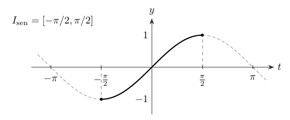
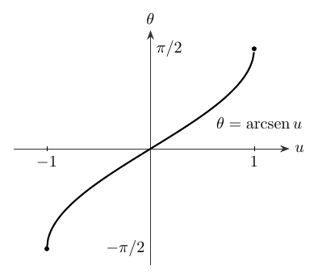
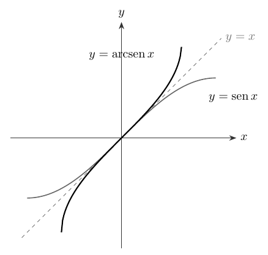
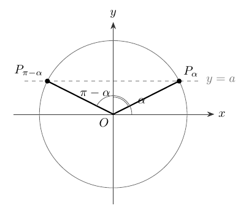
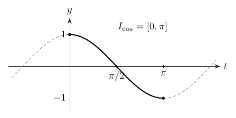
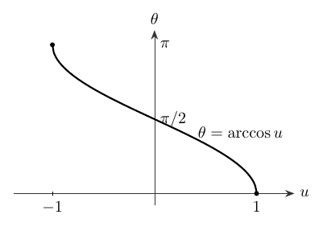
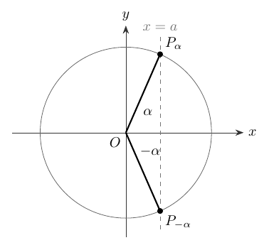
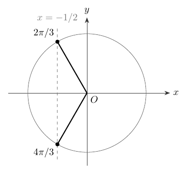
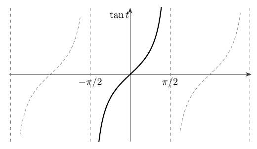
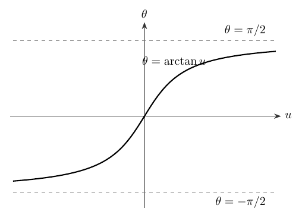

Funciones trigonométricas inversas y ecuaciones
Capítulo 8 · Parte II. Funciones y trigonometría
Al restringir el dominio de ciertas funciones trigonométricas se obtienen funciones inversas. Esta construcción permite definir ramas principales y resolver ecuaciones con todas sus familias de soluciones.
Grabaciones de referencia: grabación de la cátedra 7.2.
Procedencia de este tramo: cátedra 7.2.
De la unicidad a la función inversa
En la cátedra (10:31–13:35). La sesión concluye la semana de trigonometría estudiando las funciones inversas de seno, coseno y tangente, y las ecuaciones que esas inversas permiten resolver. El problema generador es sencillo de formular: dado un número real \(a\), hallar todos los ángulos \(x\) que satisfacen una de las condiciones
\[\operatorname{sen}x=a,\qquad \cos x=a,\qquad \tan x=a.\]
La cuestión comprende dos niveles: localizar una solución distinguida y describir la familia completa. San Martín recuerda la relación entre inyectividad y unicidad y entre sobreyectividad y existencia, ya estudiada en álgebra.
Una aplicación \(f:A\to B\) es biyectiva cuando cada \(b\in B\) tiene exactamente un antecedente \(a\in A\) tal que \(f(a)=b\). La función inversa \(f^{-1}:B\to A\) asigna a cada \(b\) ese antecedente único. Gráficamente, los puntos \((a,b)\) del grafo de \(f\) corresponden a los puntos \((b,a)\) del grafo de \(f^{-1}\).
Las funciones seno y coseno tienen valores en \([-1,1]\) y repiten sus valores después de una vuelta completa. Por ello, el profesor escoge intervalos de restricción en los que cada altura aparece exactamente una vez, y fija \([-1,1]\) como codominio de esas ramas. La tangente toma todos los valores reales y repite sus valores cada \(\pi\); para ella bastará escoger una rama entre dos asíntotas consecutivas.
Ampliación editorial — convención de escritura. El símbolo \(f^{-1}\) designa la función inversa de \(f\); en particular, \(\operatorname{arcsen}\), \(\arccos\) y \(\arctan\) designan ángulos. Las funciones recíprocas son \(1/\operatorname{sen}x\), \(1/\cos x\) y \(1/\tan x\), con sus propios dominios. Esta distinción permite leer correctamente las expresiones que aparecerán a continuación.
La rama principal del seno y el arcoseno
En la cátedra (13:35–31:19). Para \(x\in[-\pi/2,\pi/2]\), el seno es estrictamente creciente y recorre una vez todas las alturas comprendidas entre \(-1\) y \(1\). Además, este intervalo incorpora el primer cuadrante, indispensable para la trigonometría de triángulos rectángulos. De aquí nace la función restringida
\[s:\left[-\frac\pi2,\frac\pi2\right]\longrightarrow[-1,1],\qquad s(x)=\operatorname{sen}x.\]

La aplicación \(s\) es biyectiva. Su inversa, llamada arcoseno, tiene la correspondencia
\[\boxed{\operatorname{arcsen}:[-1,1]\longrightarrow\left[-\frac\pi2,\frac\pi2\right].}\]
Para cada \(a\in[-1,1]\), el valor \(\operatorname{arcsen}(a)\) es el único ángulo \(\alpha\in[-\pi/2,\pi/2]\) tal que \(\operatorname{sen}\alpha=a\). Esta formulación determina simultáneamente el dominio, el recorrido y la ley de la inversa.
Ejemplos de la cátedra. El profesor recupera las alturas de los ángulos elementales:
\[ \operatorname{arcsen}\left(\frac12\right)=\frac\pi6,\quad \operatorname{arcsen}\left(\frac{\sqrt2}{2}\right)=\frac\pi4,\quad \operatorname{arcsen}\left(-\frac{\sqrt3}{2}\right)=-\frac\pi3. \]

El profesor construye el gráfico de la inversa intercambiando las coordenadas del seno restringido. Es una reflexión respecto de la recta \(y=x\): el punto \((\pi/2,1)\) pasa a \((1,\pi/2)\), y \((-\pi/2,-1)\) pasa a \((-1,-\pi/2)\).

Demostración desarrollada. Como el seno es impar, si \(\alpha\in[-\pi/2,\pi/2]\) tiene seno \(a\), entonces \(-\alpha\) pertenece al mismo intervalo y tiene seno \(-a\). La unicidad de la inversa da
\[\boxed{\operatorname{arcsen}(-a)=-\operatorname{arcsen}(a)\qquad(-1\leq a\leq1).}\]
Las dos identidades de composición deben leerse con sus dominios:
\[\operatorname{sen}(\operatorname{arcsen} a)=a\quad(a\in[-1,1]),\] \[\operatorname{arcsen}(\operatorname{sen}x)=x\quad\left(x\in[-\frac\pi2,\frac\pi2]\right).\]
Para un ángulo exterior al intervalo principal, \(\operatorname{arcsen}(\operatorname{sen}x)\) devuelve el representante principal que tiene su misma altura. Esta propiedad conecta con la ecuación general de la sección siguiente.
Resolver completamente \(\operatorname{sen}x=a\)
En la cátedra (31:19–47:27). Cuando \(|a|>1\), el problema carece de soluciones reales por la acotación del seno. Para cada \(a\in[-1,1]\), existe la solución principal
\[\alpha=\operatorname{arcsen}(a)\in[-\pi/2,\pi/2].\]
En el círculo unitario, la condición \(\operatorname{sen}x=a\) describe la intersección de la circunferencia con la recta horizontal \(y=a\). Para \(-1<a<1\) aparecen, en general, dos puntos por vuelta. Si el primero tiene ángulo \(\alpha\), el simétrico respecto del eje vertical tiene ángulo \(\pi-\alpha\).

La figura presenta \(a>0\). La misma expresión \(\pi-\alpha\) funciona cuando \(a<0\): entonces \(\alpha\) es negativo y la segunda dirección se obtiene en el tercer cuadrante. La escritura con ángulos orientados conserva los signos sin introducir valores absolutos artificiales.
Demostración desarrollada. La simetría y la periodicidad producen las dos familias
\[ \boxed{\begin{aligned} x&=\alpha+2k\pi,\\ x&=\pi-\alpha+2k\pi, \end{aligned}\qquad k\in\mathbb Z.} \]
El profesor presenta una notación unificada. Cuando \(k\) es par, \((-1)^k=1\); cuando \(k\) es impar, \((-1)^k=-1\). Así, todos los valores se reúnen en
\[\boxed{x=k\pi+(-1)^k\operatorname{arcsen}(a),\qquad k\in\mathbb Z,\quad |a|\leq1.}\]
Si \(a=1\) o \(a=-1\), las familias describen repetidamente un mismo punto por vuelta. La fórmula conserva su validez; en esos extremos la línea horizontal es tangente al círculo.
Analogía desarrollada en la cátedra (47:47–54:50). Para resolver \(x^2=a\), primero se obtiene la raíz principal \(\sqrt a\) sobre \([0,\infty)\); después se recuperan ambas posibilidades mediante \(x=\pm\sqrt a\) (para \(a>0\)). En las ecuaciones trigonométricas, la función inversa proporciona asimismo una solución principal, mientras que las simetrías y la periodicidad generan las demás. Por ejemplo, \(\operatorname{arcsen}(1/2)=\pi/6\), y la ecuación \(\operatorname{sen}x=1/2\) tiene soluciones \(\pi/6+2k\pi\) y \(5\pi/6+2k\pi\).
El coseno restringido y el arcocoseno
En la cátedra (54:50–1:10:33). La elección natural para el coseno es la rama del primer y segundo cuadrantes. En el intervalo \([0,\pi]\) la función es estrictamente decreciente y recorre todas las alturas del \(1\) al \(-1\):
\[c:[0,\pi]\longrightarrow[-1,1],\qquad c(x)=\cos x.\]

Su inversa recibe el nombre arcocoseno:
\[\boxed{\arccos:[-1,1]\longrightarrow[0,\pi].}\]
Para cada \(a\in[-1,1]\), \(\arccos(a)\) es el único ángulo \(\alpha\in[0,\pi]\) que satisface \(\cos\alpha=a\). El recorrido de esta función es enteramente no negativo: en particular, el arcocoseno de un número negativo corresponde a un ángulo del segundo cuadrante.
\[ \arccos(1)=0,\quad \arccos\left(\frac12\right)=\frac\pi3,\quad \arccos(0)=\frac\pi2,\quad \arccos\left(-\frac12\right)=\frac{2\pi}{3},\quad \arccos(-1)=\pi. \]

Ampliación editorial. La simetría del círculo respecto del eje vertical muestra que \(\cos(\pi-\alpha)=-\cos\alpha\). Como ambos ángulos principales pertenecen a \([0,\pi]\), resulta
\[\arccos(-a)=\pi-\arccos(a),\qquad a\in[-1,1].\]
Las identidades de composición son
\[\cos(\arccos a)=a\ (a\in[-1,1]),\qquad \arccos(\cos x)=x\ (x\in[0,\pi]).\]
Resolver completamente \(\cos x=a\)
En la cátedra (1:10:33–1:22:43). La condición de existencia vuelve a ser \(|a|\leq1\). Si se cumple, el ángulo principal es
\[\alpha=\arccos(a)\in[0,\pi].\]
En el círculo unitario, la ecuación \(\cos x=a\) selecciona la recta vertical \(x=a\). Los dos puntos de intersección se reflejan en el eje horizontal; sus ángulos son \(\alpha\) y \(-\alpha\).

Por la paridad del coseno y la periodicidad, todas las soluciones se expresan como
\[\boxed{x=2k\pi\pm\arccos(a),\qquad k\in\mathbb Z,\quad |a|\leq1.}\]
El signo \(\pm\) señala dos familias de soluciones. En los valores \(a=1\) y \(a=-1\) las familias pueden coincidir, ya que los puntos correspondientes están situados sobre el eje horizontal.
Una comprobación útil de la clase es \(\cos x=-1/2\): el ángulo principal es \(2\pi/3\), y las direcciones de una vuelta son \(2\pi/3\) y \(4\pi/3\). Ambas quedan incluidas en \(2k\pi\pm2\pi/3\).

La tangente restringida y la arcotangente
En la cátedra (1:22:43–1:27:06). La tangente presenta asíntotas verticales en los ángulos \(\pi/2+k\pi\). Entre \(-\pi/2\) y \(\pi/2\) es estrictamente creciente, recorre todos los valores reales y su dominio es abierto en ambos extremos:
\[t:\left(-\frac\pi2,\frac\pi2\right)\longrightarrow\mathbb R,\qquad t(x)=\tan x.\]

La función inversa es la arcotangente,
\[\boxed{\arctan:\mathbb R\longrightarrow\left(-\frac\pi2,\frac\pi2\right).}\]
Por ejemplo,
\[\arctan(0)=0,\quad \arctan(1)=\frac\pi4,\quad \arctan(-1)=-\frac\pi4,\quad \arctan(\sqrt3)=\frac\pi3.\]

Demostración desarrollada. Si \(a\in\mathbb R\) y \(\alpha=\arctan(a)\), entonces \(\tan\alpha=a\). Como la tangente tiene período \(\pi\), las soluciones completas son
\[\boxed{x=\arctan(a)+k\pi,\qquad k\in\mathbb Z,\quad a\in\mathbb R.}\]
La arcotangente es impar; por consiguiente \(\arctan(-a)=-\arctan(a)\). A diferencia del arcoseno y el arcocoseno, admite cualquier real como argumento.
Una tabla para orientar las ecuaciones
| Función principal | Dominio de la inversa | Recorrido de la inversa | Solución general de \(f(x)=a\) |
|---|---|---|---|
| \(\operatorname{arcsen}\) | \([-1,1]\) | \([-\pi/2,\pi/2]\) | \(k\pi+(-1)^k\operatorname{arcsen}(a)\) |
| \(\arccos\) | \([-1,1]\) | \([0,\pi]\) | \(2k\pi\pm\arccos(a)\) |
| \(\arctan\) | \(\mathbb R\) | \((-\pi/2,\pi/2)\) | \(\arctan(a)+k\pi\) |
En todas las expresiones \(k\in\mathbb Z\). El primer paso de la resolución consiste en verificar que el dato \(a\) pertenezca al conjunto imagen de la función original. El segundo localiza un ángulo principal mediante la inversa. El tercero aplica las simetrías y el período adecuados.
Ampliación editorial — criterio de comprobación. Sustituir la fórmula de una familia en la ecuación original permite confirmar la corrección. Por ejemplo,
\[\operatorname{sen}\bigl(\pi-\operatorname{arcsen}(a)\bigr)=a,\quad \cos\bigl(-\arccos(a)\bigr)=a,\quad \tan\bigl(\arctan(a)+k\pi\bigr)=a.\]
Estas identidades proporcionan una verificación inmediata, mientras que el gráfico del círculo y la periodicidad justifican que se ha recuperado el conjunto completo de soluciones.
Ejemplo final de la grabación: una ecuación compuesta
En la cátedra (1:27:13–1:40:50). San Martín propone resolver
\[\boxed{1+\operatorname{sen}x+\cos x+\operatorname{sen}(2x)+\cos(2x)=0.}\]
La estrategia central es transformar las funciones del ángulo doble mediante
\[\operatorname{sen}(2x)=2\operatorname{sen}x\cos x,\qquad \cos(2x)=\cos^2x-\operatorname{sen}^2x.\]
Desarrollo de la demostración. Escribimos \(s=\operatorname{sen}x\) y \(c=\cos x\), de manera que \(s^2+c^2=1\). Entonces la ecuación se convierte, por equivalencias, en
\[ \begin{aligned} 0&=1+s+c+2sc+c^2-s^2\\ &=s+c+2sc+2c^2\\ &=(s+c)(1+2c). \end{aligned} \]
Así, el problema inicial equivale a resolver cualquiera de las dos ecuaciones
\[\operatorname{sen}x+\cos x=0\qquad\text{o}\qquad 1+2\cos x=0.\]
La grabación resuelve explícitamente la segunda y enseña a transformar la primera mediante el factor \(\sqrt2/2\), dejando parte del despeje final indicado. Completamos ambas familias a continuación.
Primera familia — ampliación editorial. La identidad de adición para el coseno da
\[ \frac{\sqrt2}{2}(\cos x+\operatorname{sen}x) =\cos x\cos\frac\pi4+\operatorname{sen}x\operatorname{sen}\frac\pi4 =\cos\left(x-\frac\pi4\right). \]
Por ello \(\cos(x-\pi/4)=0\), de donde \(x-\pi/4=\pi/2+k\pi\). La primera familia puede escribirse como
\[\boxed{x=-\frac\pi4+k\pi,\qquad k\in\mathbb Z.}\]
La fórmula obtenida directamente, \(x=3\pi/4+k\pi\), describe el mismo conjunto después de cambiar el índice \(k\).
Segunda familia — en la cátedra y desarrollo editorial. La condición \(1+2\cos x=0\) conduce a \(\cos x=-1/2\). Como \(\arccos(-1/2)=2\pi/3\),
\[\boxed{x=2k\pi\pm\frac{2\pi}{3},\qquad k\in\mathbb Z.}\]
Respuesta completa. El conjunto buscado es la unión de esas tres progresiones angulares:
\[\boxed{S=\left\{-\frac\pi4+k\pi:k\in\mathbb Z\right\} \cup\left\{2k\pi\pm\frac{2\pi}{3}:k\in\mathbb Z\right\}.}\]
La igualdad de la expresión original con el producto factorizado es una identidad válida para todo ángulo real; cada transformación ha preservado el conjunto de soluciones.
Propuesta final de la clase: una combinación lineal
En la cátedra (1:41:08–1:41:35). San Martín deja planteada otra ecuación:
\[\sqrt3\cos x+\operatorname{sen}x=1.\]
Sugiere reconocer en sus coeficientes valores de seno y coseno de un ángulo elemental y reducir así el ejercicio a una sola función trigonométrica.
Ampliación editorial — resolución. Recordando que \(\cos(\pi/6)=\sqrt3/2\) y \(\operatorname{sen}(\pi/6)=1/2\),
\[\sqrt3\cos x+\operatorname{sen}x =2\left(\cos x\cos\frac\pi6+\operatorname{sen}x\operatorname{sen}\frac\pi6\right) =2\cos\left(x-\frac\pi6\right).\]
Así \(\cos(x-\pi/6)=1/2\), con soluciones
\[x-\frac\pi6=2k\pi\pm\frac\pi3.\]
Por tanto,
\[\boxed{x=\frac\pi2+2k\pi\quad\text{o}\quad x=-\frac\pi6+2k\pi,\qquad k\in\mathbb Z.}\]
Ampliación editorial — principio reusable. Para constantes reales \(A,B\) con \(R=\sqrt{A^2+B^2}>0\), hay un ángulo \(\varphi\) que satisface \(\cos\varphi=A/R\) y \(\operatorname{sen}\varphi=B/R\). Entonces
\[A\cos x+B\operatorname{sen}x=R\cos(x-\varphi).\]
Esta construcción, apoyada en el círculo unitario, transforma una combinación lineal de seno y coseno en una sola función con un desplazamiento angular. Es también el fundamento del método para resolver \(A\cos x+B\operatorname{sen}x=C\): la existencia de soluciones se determina comparando \(|C|\) con \(R\).
Balance y tránsito al siguiente tema
En la cátedra y consultas finales (1:41:35–1:52:35). Con las inversas de seno, coseno y tangente termina el bloque de trigonometría que entra en el segundo control del curso. En las consultas finales se mencionan cambios de calendario, la devolución de tareas y la próxima unidad dedicada al axioma del supremo. Estas intervenciones ofrecen contexto académico de 2021 y se consignan aquí únicamente como continuidad del itinerario, sin transformarlas en contenido matemático nuevo de esta sesión.
El argumento que organiza la clase puede resumirse de forma afirmativa: elegir una rama biyectiva, determinar su inversa, obtener un ángulo principal y reconstruir la totalidad de soluciones por simetría y periodicidad. Esa secuencia permite resolver ecuaciones desde la geometría del círculo y las propiedades de las funciones. La factorización del ejercicio final muestra, además, que las identidades trigonométricas y el álgebra de funciones trabajan conjuntamente.
Taller de problemas y soluciones
Los ejercicios se presentan a continuación según la fuente de origen; las ampliaciones editoriales de cada apuntes permanecen expresamente identificadas.
Problemas complementarios resueltos — cátedra 7.2
Los siguientes problemas son originales de esta edición. Se organizan como una prolongación graduada de la clase: primero inversión, luego familias de soluciones y, finalmente, ecuaciones que necesitan identidades. Cada respuesta incluye el argumento que determina el conjunto completo de soluciones.
Ángulos principales
Calcular \(\operatorname{arcsen}(1/2)\) y \(\operatorname{arcsen}(-\sqrt2/2)\). Solución. En \([-\pi/2,\pi/2]\), el ángulo con seno \(1/2\) es \(\pi/6\) y el de seno \(-\sqrt2/2\) es \(-\pi/4\). Por tanto,
\[\operatorname{arcsen}(1/2)=\pi/6,\qquad\operatorname{arcsen}(-\sqrt2/2)=-\pi/4.\]
El segundo cuadrante
Calcular \(\arccos(-1/2)\). Solución. El arcocoseno entrega un ángulo de \([0,\pi]\); la abscisa \(-1/2\) corresponde a \(2\pi/3\). Así, \(\arccos(-1/2)=2\pi/3\).
El representante principal de un seno
Calcular \(\operatorname{arcsen}(\operatorname{sen}(5\pi/6))\). Solución. \(\operatorname{sen}(5\pi/6)=1/2\), de modo que el representante principal es \(\pi/6\). El ángulo inicial y el principal comparten altura en el círculo.
El representante principal de un coseno
Calcular \(\arccos(\cos(5\pi/3))\). Solución. El coseno vale \(1/2\), y el único ángulo de \([0,\pi]\) con ese coseno es \(\pi/3\).
La tangente y su período
Calcular \(\arctan(\tan(3\pi/4))\). Solución. \(\tan(3\pi/4)=-1\), y la arcotangente pertenece al intervalo abierto \((-\pi/2,\pi/2)\); por ello el resultado es \(-\pi/4\).
Una ecuación del seno con dos familias
Resolver \(\operatorname{sen}x=1/2\). Solución. El ángulo principal es \(\pi/6\). Las soluciones son
\[x=\frac\pi6+2k\pi\quad\text{o}\quad x=\frac{5\pi}{6}+2k\pi,\qquad k\in\mathbb Z.\]
Seno negativo
Resolver \(\operatorname{sen}x=-\sqrt3/2\). Solución. La rama principal da \(\alpha=-\pi/3\). Por la reflexión \(\pi-\alpha=4\pi/3\), resulta
\[x=-\frac\pi3+2k\pi\quad\text{o}\quad x=\frac{4\pi}{3}+2k\pi,\qquad k\in\mathbb Z.\]
Coseno negativo
Resolver \(\cos x=-\sqrt2/2\). Solución. \(\alpha=\arccos(-\sqrt2/2)=3\pi/4\). Por paridad y periodicidad,
\[x=2k\pi\pm\frac{3\pi}{4},\qquad k\in\mathbb Z.\]
Extremos de la función coseno
Resolver \(\cos x=1\). Solución. El único punto del círculo con abscisa \(1\) es \((1,0)\). Se alcanza después de cualquier número entero de vueltas:
\[x=2k\pi,\qquad k\in\mathbb Z.\]
Tangente y soluciones periódicas
Resolver \(\tan x=\sqrt3\). Solución. La solución principal es \(\pi/3\); las restantes se obtienen sumando múltiplos de \(\pi\):
\[x=\frac\pi3+k\pi,\qquad k\in\mathbb Z.\]
Una tangente del ángulo doble
Resolver \(\tan(2x)=1\). Solución. \(2x=\pi/4+k\pi\), así que
\[x=\frac\pi8+\frac{k\pi}{2},\qquad k\in\mathbb Z.\]
Los ceros del seno del ángulo doble
Resolver \(\operatorname{sen}(2x)=0\). Solución. Los ceros del seno son los múltiplos enteros de \(\pi\), luego \(2x=k\pi\) y
\[x=\frac{k\pi}{2},\qquad k\in\mathbb Z.\]
Dos funciones con el mismo valor
Resolver \(\operatorname{sen}x=\cos x\). Solución. Como un ángulo que satisface la igualdad tiene \(\cos x\ne0\), la división por el coseno es legítima. La condición es \(\tan x=1\), de donde
\[x=\frac\pi4+k\pi,\qquad k\in\mathbb Z.\]
Una ecuación con el seno al cuadrado
Resolver \(\operatorname{sen}^2x=1/4\). Solución. La ecuación equivale a \(\operatorname{sen}x=1/2\) o \(\operatorname{sen}x=-1/2\). Las cuatro direcciones de cada vuelta se condensan en
\[x=k\pi\pm\frac\pi6,\qquad k\in\mathbb Z.\]
Una suma que vale uno
Resolver \(\operatorname{sen}x+\cos x=1\). Solución. Por la identidad de adición, \(\operatorname{sen}x+\cos x=\sqrt2\operatorname{sen}(x+\pi/4)\). Por tanto \(\operatorname{sen}(x+\pi/4)=1/\sqrt2\), y
\[x=2k\pi\quad\text{o}\quad x=\frac\pi2+2k\pi,\qquad k\in\mathbb Z.\]
El coseno de un ángulo y de su doble
Resolver \(\cos(2x)=\cos x\). Solución. Escribiendo \(c=\cos x\) y usando \(\cos(2x)=2c^2-1\), obtenemos
\[2c^2-c-1=(2c+1)(c-1)=0.\]
Por tanto, \(\cos x=1\) o \(\cos x=-1/2\). El conjunto solución es
\[x=2k\pi\quad\text{o}\quad x=2k\pi\pm\frac{2\pi}{3},\qquad k\in\mathbb Z.\]
Una ecuación cuadrática en el seno
Resolver \(2\operatorname{sen}^2x+\operatorname{sen}x-1=0\). Solución. El cambio \(s=\operatorname{sen}x\) lleva a \((2s-1)(s+1)=0\). Así, \(s=1/2\) o \(s=-1\). Las soluciones son
\[x=\frac\pi6+2k\pi,\quad x=\frac{5\pi}{6}+2k\pi,\quad x=\frac{3\pi}{2}+2k\pi,\qquad k\in\mathbb Z.\]
Dominio exacto de una identidad de composición
Determinar todos los reales \(x\) para los que \(\operatorname{arcsen}(\operatorname{sen}x)=x\). Solución. El arcoseno toma valores precisamente en \([-\pi/2,\pi/2]\). Dentro de ese intervalo es inversa del seno restringido y la igualdad se cumple. Fuera de él, el miembro izquierdo permanece en el intervalo y, por tanto, difiere del ángulo \(x\). La respuesta es
\[\boxed{x\in[-\pi/2,\pi/2].}\]
Resolver una ecuación con parámetro
Para \(a\in\mathbb R\), resolver \(\cos x=2a-1\). Solución. Hay soluciones reales exactamente cuando \(-1\leq2a-1\leq1\), esto es, cuando \(0\leq a\leq1\). Para esos parámetros,
\[x=2k\pi\pm\arccos(2a-1),\qquad k\in\mathbb Z.\]
Generalizar el último ejercicio de la cátedra
Dados \(A,B,C\in\mathbb R\) con \(A^2+B^2>0\), estudiar \(A\cos x+B\operatorname{sen}x=C\). Solución. Elegimos \(R=\sqrt{A^2+B^2}\) y un ángulo \(\varphi\) de coseno \(A/R\) y seno \(B/R\). La ecuación se transforma en
\[\cos(x-\varphi)=\frac{C}{R}.\]
Tiene soluciones cuando \(|C|\leq R\), en cuyo caso
\[\boxed{x=\varphi+2k\pi\pm\arccos(C/R),\qquad k\in\mathbb Z.}\]
Este procedimiento proporciona una forma sistemática de reconocer el factor de normalización que San Martín propone buscar en la última parte de la grabación.
Este capítulo pertenece a la edición temática no oficial del curso IC2021. Índice del libro · Fuentes y concordancia.